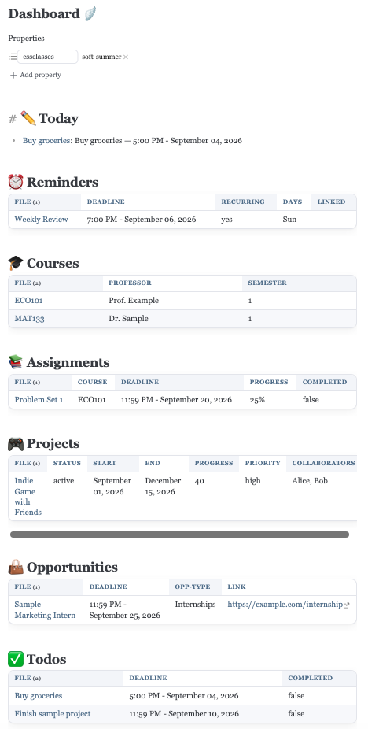

Emma Zhang
Hi! I'm a second-year student at Rotman Commerce, specializing in Finance and Economics. I'm building an Obsidian dashboard around the "second brain" concept!
Project
My Obsidian "Second Brain"
A personal dashboard built with Dataview, Templater, and Buttons to track assignments, deadlines, and opportunities — all organized by properties and tags instead of folders.
